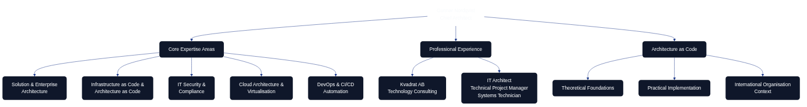

About the Author {.unnumbered}
This book represents the culmination of extensive experience in architecture, infrastructure, and systems development, bringing together theoretical foundations with practical expertise to create a comprehensive resource for organisations embracing Architecture as Code.

An overview of the expertise and experience that shaped this comprehensive guide to Architecture as Code and Infrastructure as Code.
Gunnar Nordqvist
Gunnar Nordqvist is a certified Chief Architect and IT Architect at Kvadrat, a leading European technology consultancy. As an IT generalist with a profound interest in technology, Gunnar has worked across diverse roles throughout his career, including IT architect, technical project manager, and systems technician.
Professional Background
Gunnar's extensive experience spans solution and enterprise architecture, IT infrastructure, and specialised information security engagements. His varied technical background encompasses network solutions, servers, virtualisation, and IT security, amongst other critical facets of contemporary technology estates.
Core Areas of Expertise: - Solution and Enterprise Architecture - Infrastructure as Code and Architecture as Code - IT Security and Compliance - Cloud Architecture and Virtualisation - DevOps and CI/CD Automation - Network Solutions and Infrastructure Design
Architecture as Code Journey
Throughout his career, Gunnar has witnessed the evolution from manual, document-led architecture practice to the modern paradigm of codified architecture. This shift has shaped his approach to system design and his conviction that architecture must be treated with the same rigour and methodology as software engineering.
His work at Kvadrat has provided him with unique insights into the challenges faced by organisations in highly regulated industries whilst they navigate digital transformation and adopt Architecture as Code practice. These real-world experiences inform every chapter of this book, ensuring that theoretical principles are always grounded in practical application.
About Kvadrat
Kvadrat is an independent technology consultancy renowned for delivering excellence in IT architecture and infrastructure solutions across Europe. The company has been instrumental not only in supporting the creation of this book but also in pioneering Architecture as Code practices within complex, compliance-driven organisations.
Kvadrat's Contribution
Technical Excellence: - Solution architecture and enterprise architecture consulting - Infrastructure as Code implementation and best practices - Cloud migration and modernisation programmes - Security and compliance advisory
Book Development Support: - Professional design and brand integration - Technical infrastructure for automated publishing - Quality assurance and technical review - CI/CD pipeline development for book production
Design and Brand Integration
The visual identity of this book reflects Kvadrat's commitment to professional excellence. The design system incorporates:
- Modern, professional layout aligned with Kvadrat's brand guidelines
- Consistent colour palette (Kvadrat Blue: hsl(221, 67%, 32%))
- Clean typography and readable formatting
- Professional diagrams and visual elements
Swedish Terminology Reference
Terminology Note: The Swedish organisations and institutions referenced here keep their native names to preserve accuracy. The translations below clarify the meaning for readers unfamiliar with Swedish terminology.
- Kvadrat AB –
ABstands for aktiebolag, Sweden’s equivalent of a limited company. The firm’s name translates literally to “square” but is always written as Kvadrat in branding. - KTH Royal Institute of Technology – Commonly referred to as KTH, the Swedish name is Kungliga Tekniska högskolan (“Royal Institute of Technology”).
- Linköping University – In Swedish, Linköpings universitet; the apostrophe-free form follows Swedish grammar rules.
- Malmö University – Malmö universitet retains the letter
ö, pronounced roughly like the vowel sound in “blur”. - Nordqvist – A Swedish family name combining nord (“north”) and qvist (“twig”), reflecting traditional Swedish surname construction.
The Book's Technical Foundation
This publication demonstrates Architecture as Code principles not only in its content but in its very creation. The book itself is built using modern DevOps practices and automated workflows.
Publishing Toolchain
Content Generation: - Python 3.12 for content automation and orchestration - Pandoc 3.1.9 for document conversion and multi-format publishing - XeLaTeX with Eisvogel template for professional PDF production - Mermaid CLI for diagram-as-code generation
Automation and Quality: - GitHub Actions for CI/CD automation - Version Control for all content and diagrams - Automated Testing for validation and quality assurance - Multi-format Publishing (PDF, EPUB, DOCX)
Living Documentation Principles
This book embodies the principles it teaches:
- Version Controlled: Every change tracked in Git
- Automated Building: CI/CD pipelines ensure consistent quality
- Diagram as Code: All diagrams defined in Mermaid and version controlled
- Reproducible: Anyone can build the book from source
- Continuously Improved: Regular updates based on feedback and evolution
Acknowledgements
Open Source Community
This book builds upon the outstanding work of the open source community, particularly:
- Terraform - Infrastructure as Code foundation
- Ansible - Configuration management automation
- Docker - Containerisation technology
- Kubernetes - Container orchestration
- Pandoc - Document conversion excellence
- Mermaid - Diagram as Code visualisation
Technology Community Partnerships
Gratitude to the technology communities that have contributed insights and feedback:
- GlobalCoders Collective - For technical content review
- DevOps Practitioners Network - For practical case studies
- Cloud Architecture Guild - For cloud-specific contributions
- Security Specialists Alliance - For compliance guidance
Academic Institutions
- KTH Royal Institute of Technology - For research perspectives
- Linköping University - For system architecture expertise
- Malmö University - For user-centred design principles
Continuous Improvement
This book is designed as a living resource that evolves with:
- Community Feedback - Input from organisations implementing Architecture as Code
- Technical Evolution - Updates as new tools and methods emerge
- Practical Lessons - Integration of new case studies and best practices
- Language Refinement - Continuous improvement of clarity and precision
Contributing to Future Editions
Contributions from the technology community are welcomed:
Content Contributions: - Case studies from real implementations - Best practices from diverse organisations - Coverage of new tools and technologies - Improvements in clarity and precision
Technical Contributions: - Code examples and automation scripts - Build pipeline enhancements - New export formats and distribution channels - Accessibility and usability improvements
Contact Information
For questions, feedback, or suggestions for improvements:
- GitHub Repository: https://github.com/Geonitab/architecture_as_code
- Issues and Pull Requests: Welcomed for content and technical improvements
- Discussions: GitHub Discussions for broader conversations about Architecture as Code
Licence and Usage
This book is distributed under terms that enable:
- Free Distribution for educational purposes
- Adaptation for organisation-specific needs
- Commercial Use with proper attribution
- Translation to other languages whilst maintaining quality
All reuse should acknowledge the original author and contributors according to established academic and technical standards.
Closing Reflections
The journey towards Architecture as Code represents more than a technical evolution—it embodies a fundamental shift in how we conceive, design, and operate technology systems. By codifying architecture, we bring the rigour, repeatability, and reliability of software engineering to the entire technology landscape.
This book aims to accelerate the adoption of Architecture as Code principles and contribute to improved technical outcomes across organisations. The success of these methodologies depends not only on technical implementation but on cultural transformation and organisational commitment to treating architecture as a first-class engineering discipline.
As technology continues to evolve, the principles outlined in this book—declarative design, version control, automation, and continuous validation—will remain fundamental to building reliable, scalable, and maintainable systems.
Sources: - Kvadrat AB. 'Gunnar Nordqvist - Chief Architect Profile.' Konsultprofil, 2024. Available at: https://www.kvadrat.se/anlita-kvadrat/hitta-konsult/gunnar-nordqvist/ - Kvadrat AB. 'Technology Consulting Excellence.' Company Profile, 2024. Available at: https://www.kvadrat.se/ - ThoughtWorks. 'Architecture as Code: The Next Evolution.' Technology Radar, 2024. - GitHub Open Source Community. 'Collaborative Software Development.' Platform Documentation, 2024.